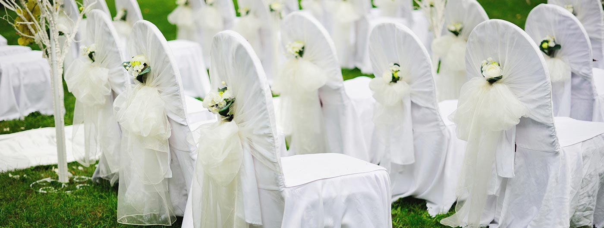
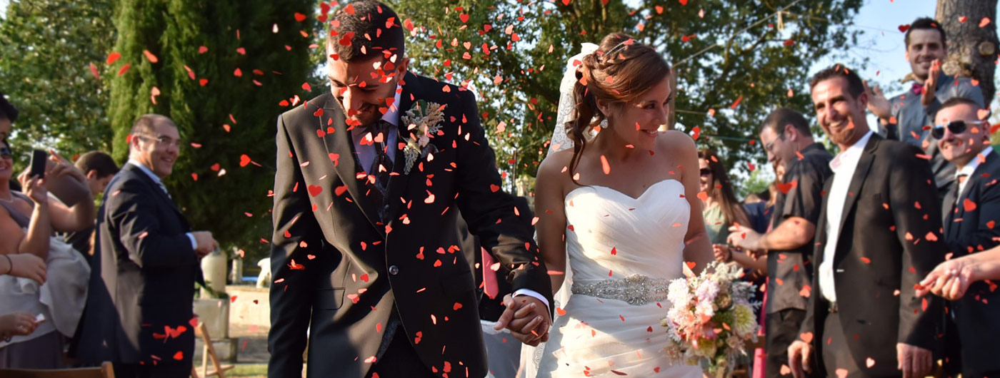
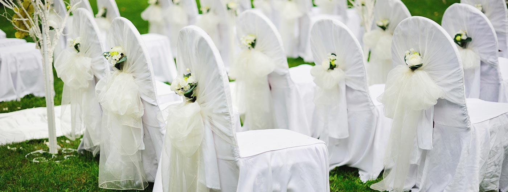
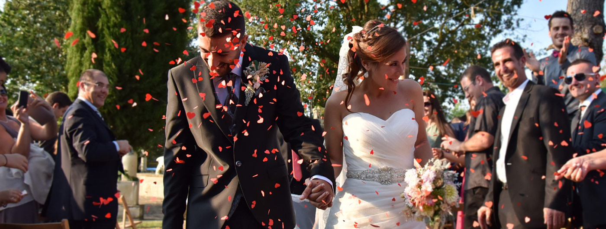

HISTORIA
Nix Events fundado en 2004, está formado por un equipo de profesionales de formación multidisciplinar, especialistas en la organización de bodas y eventos de todo tipo, garantizando en cada ocasión el éxito del evento y dando soluciones a los clientes más exigentes.
Adela Bonito, licenciada en Publicidad y Relaciones Públicas, ha desarrollado su carrera profesional en las mejores agencias de eventos de nuestro país. Tras más de 7 años de experiencia como wedding planners y eventos en Madrid no se le escapa ningún detalle.
Darian Duques es un profesional comprometido, innovador y creativo, con una trayectoria de más de 10 años en el mundo de los eventos corporativos. Le apasiona el contacto permanente con la novia, ser su mano derecha para todo lo que necesite. Su objetivo es materializar cualquier idea que tenga, aportando creatividad, originalidad y armonía artística. Le encanta lo que a muchas personas les estresa: buscar, negociar y organizar, es lo que hace que su trabajo sea apasionante cada día